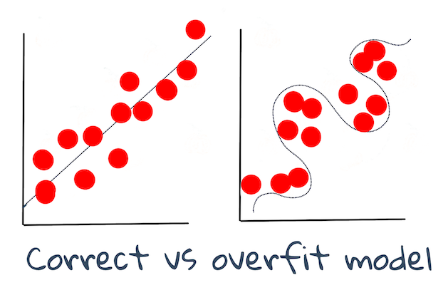

Techniques of ML
Techniques of Machine Learning¶
The process of building, using, and maintaining machine learning models and the data they use is a very different process from many other development workflows. In this lesson, we will demystify the process, and outline the main techniques you need to know. You will:
- Understand the processes underpinning machine learning at a high level.
- Explore base concepts such as 'models', 'predictions', and 'training data'.
Pre-lecture quiz¶

🎥 Click the image above for a short video working through this lesson.
Introduction¶
On a high level, the craft of creating machine learning (ML) processes is comprised of a number of steps:
- Decide on the question. Most ML processes start by asking a question that cannot be answered by a simple conditional program or rules-based engine. These questions often revolve around predictions based on a collection of data.
- Collect and prepare data. To be able to answer your question, you need data. The quality and, sometimes, quantity of your data will determine how well you can answer your initial question. Visualizing data is an important aspect of this phase. This phase also includes splitting the data into a training and testing group to build a model.
- Choose a training method. Depending on your question and the nature of your data, you need to choose how you want to train a model to best reflect your data and make accurate predictions against it. This is the part of your ML process that requires specific expertise and, often, a considerable amount of experimentation.
- Train the model. Using your training data, you'll use various algorithms to train a model to recognize patterns in the data. The model might leverage internal weights that can be adjusted to privilege certain parts of the data over others to build a better model.
- Evaluate the model. You use never before seen data (your testing data) from your collected set to see how the model is performing.
- Parameter tuning. Based on the performance of your model, you can redo the process using different parameters, or variables, that control the behavior of the algorithms used to train the model.
- Predict. Use new inputs to test the accuracy of your model.
What question to ask¶
Computers are particularly skilled at discovering hidden patterns in data. This utility is very helpful for researchers who have questions about a given domain that cannot be easily answered by creating a conditionally-based rules engine. Given an actuarial task, for example, a data scientist might be able to construct handcrafted rules around the mortality of smokers vs non-smokers.
When many other variables are brought into the equation, however, a ML model might prove more efficient to predict future mortality rates based on past health history. A more cheerful example might be making weather predictions for the month of April in a given location based on data that includes latitude, longitude, climate change, proximity to the ocean, patterns of the jet stream, and more.
✅ This slide deck on weather models offers a historical perspective for using ML in weather analysis.
Pre-building tasks¶
Before starting to build your model, there are several tasks you need to complete. To test your question and form a hypothesis based on a model's predictions, you need to identify and configure several elements.
Data¶
To be able to answer your question with any kind of certainty, you need a good amount of data of the right type. There are two things you need to do at this point:
- Collect data. Keeping in mind the previous lesson on fairness in data analysis, collect your data with care. Be aware of the sources of this data, any inherent biases it might have, and document its origin.
- Prepare data. There are several steps in the data preparation process. You might need to collate data and normalize it if it comes from diverse sources. You can improve the data's quality and quantity through various methods such as converting strings to numbers (as we do in Clustering). You might also generate new data, based on the original (as we do in Classification). You can clean and edit the data (as we will prior to the Web App lesson). Finally, you might also need to randomize it and shuffle it, depending on your training techniques.
✅ After collecting and processing your data, take a moment to see if its shape will allow you to address your intended question. It may be that the data will not perform well in your given task, as we discover in our Clustering lessons!
Features and Target¶
A feature is a measurable property of your data. In many datasets it is expressed as a column heading like 'date' 'size' or 'color'. Your feature variable, usually represented as X in code, represent the input variable which will be used to train model.
A target is a thing you are trying to predict. Target usually represented as y in code, represents the answer to the question you are trying to ask of your data: in December, what color pumpkins will be cheapest? in San Francisco, what neighborhoods will have the best real estate price? Sometimes target is also referred as label attribute.
Selecting your feature variable¶
🎓 Feature Selection and Feature Extraction How do you know which variable to choose when building a model? You'll probably go through a process of feature selection or feature extraction to choose the right variables for the most performant model. They're not the same thing, however: "Feature extraction creates new features from functions of the original features, whereas feature selection returns a subset of the features." (source)
Visualize your data¶
An important aspect of the data scientist's toolkit is the power to visualize data using several excellent libraries such as Seaborn or MatPlotLib. Representing your data visually might allow you to uncover hidden correlations that you can leverage. Your visualizations might also help you to uncover bias or unbalanced data (as we discover in Classification).
Split your dataset¶
Prior to training, you need to split your dataset into two or more parts of unequal size that still represent the data well.
- Training. This part of the dataset is fit to your model to train it. This set constitutes the majority of the original dataset.
- Testing. A test dataset is an independent group of data, often gathered from the original data, that you use to confirm the performance of the built model.
- Validating. A validation set is a smaller independent group of examples that you use to tune the model's hyperparameters, or architecture, to improve the model. Depending on your data's size and the question you are asking, you might not need to build this third set (as we note in Time Series Forecasting).
Building a model¶
Using your training data, your goal is to build a model, or a statistical representation of your data, using various algorithms to train it. Training a model exposes it to data and allows it to make assumptions about perceived patterns it discovers, validates, and accepts or rejects.
Decide on a training method¶
Depending on your question and the nature of your data, you will choose a method to train it. Stepping through Scikit-learn's documentation - which we use in this course - you can explore many ways to train a model. Depending on your experience, you might have to try several different methods to build the best model. You are likely to go through a process whereby data scientists evaluate the performance of a model by feeding it unseen data, checking for accuracy, bias, and other quality-degrading issues, and selecting the most appropriate training method for the task at hand.
Train a model¶
Armed with your training data, you are ready to 'fit' it to create a model. You will notice that in many ML libraries you will find the code 'model.fit' - it is at this time that you send in your feature variable as an array of values (usually 'X') and a target variable (usually 'y').
Evaluate the model¶
Once the training process is complete (it can take many iterations, or 'epochs', to train a large model), you will be able to evaluate the model's quality by using test data to gauge its performance. This data is a subset of the original data that the model has not previously analyzed. You can print out a table of metrics about your model's quality.
🎓 Model fitting
In the context of machine learning, model fitting refers to the accuracy of the model's underlying function as it attempts to analyze data with which it is not familiar.
🎓 Underfitting and overfitting are common problems that degrade the quality of the model, as the model fits either not well enough or too well. This causes the model to make predictions either too closely aligned or too loosely aligned with its training data. An overfit model predicts training data too well because it has learned the data's details and noise too well. An underfit model is not accurate as it can neither accurately analyze its training data nor data it has not yet 'seen'.

Infographic by Jen Looper
Parameter tuning¶
Once your initial training is complete, observe the quality of the model and consider improving it by tweaking its 'hyperparameters'. Read more about the process in the documentation.
Prediction¶
This is the moment where you can use completely new data to test your model's accuracy. In an 'applied' ML setting, where you are building web assets to use the model in production, this process might involve gathering user input (a button press, for example) to set a variable and send it to the model for inference, or evaluation.
In these lessons, you will discover how to use these steps to prepare, build, test, evaluate, and predict - all the gestures of a data scientist and more, as you progress in your journey to become a 'full stack' ML engineer.
🚀Challenge¶
Draw a flow chart reflecting the steps of a ML practitioner. Where do you see yourself right now in the process? Where do you predict you will find difficulty? What seems easy to you?
Post-lecture quiz¶
Review & Self Study¶
Search online for interviews with data scientists who discuss their daily work. Here is one.